🛢️ Oil Clash (Ölkampf)Oil ClashOil ClashOil ClashOil ClashOil ClashOil ClashOil Clash
Wir sammeln Öl, indem wir Gebiete besetzen. Jeden Tag um 00:00 UTC bekommt die Allianz mit den meisten Punkten das Gebiet. Wer am Ende das meiste Öl hat, gewinnt. Aber das Entscheidende ist nicht die Stärke — es ist, dass wir es zusammen und abgestimmt machen.We collect oil by occupying territories. Every day at 00:00 UTC the alliance with the most points gets the territory. Whoever has the most oil at the end wins. But what decides it is not strength — it is doing it together and in a coordinated way.Nous récoltons du pétrole en occupant des territoires. Chaque jour à 00:00 UTC, l'alliance avec le plus de points obtient le territoire. Celui qui a le plus de pétrole à la fin gagne. Mais ce qui décide, ce n'est pas la force — c'est de le faire ensemble et de façon coordonnée.Raccogliamo petrolio occupando territori. Ogni giorno alle 00:00 UTC l'alleanza con più punti ottiene il territorio. Vince chi alla fine ha più petrolio. Ma a decidere non è la forza — è farlo insieme e in modo coordinato.Recogemos petróleo ocupando territorios. Cada día a las 00:00 UTC la alianza con más puntos se queda el territorio. Gana quien tenga más petróleo al final. Pero lo que decide no es la fuerza — es hacerlo juntos y coordinados.Juntamos petróleo ocupando territórios. Todos os dias às 00:00 UTC a aliança com mais pontos fica com o território. Ganha quem tiver mais petróleo no fim. Mas o que decide não é a força — é fazê-lo juntos e coordenados.Bölgeleri işgal ederek petrol topluyoruz. Her gün 00:00 UTC'de en çok puana sahip ittifak bölgeyi alır. Sonunda en çok petrolü olan kazanır. Ama belirleyici olan güç değil — birlikte ve uyumlu hareket etmek.Мы собираем нефть, занимая территории. Каждый день в 00:00 UTC территорию получает альянс с наибольшим числом очков. Побеждает тот, у кого в конце больше нефти. Но решает не сила — решает то, что мы делаем это вместе и согласованно.
🧭 Das Wichtigste — sechs Sätze🧭 The essentials — six sentences🧭 L'essentiel — six phrases🧭 L'essenziale — sei frasi🧭 Lo esencial — seis frases🧭 O essencial — seis frases🧭 En önemlisi — altı cümle🧭 Самое главное — шесть предложений
1. Anker sind unsere Munition.1. Anchors are our ammunition.1. Les ancres sont nos munitions.1. Le ancore sono le nostre munizioni.1. Las anclas son nuestra munición.1. As âncoras são as nossas munições.1. Çapalar bizim cephanemiz.1. Якоря — это наши патроны.
Wenn wir am entscheidenden Tag nicht genug Anker haben, um gemeinsam anzugreifen, verlieren wir — egal wie stark wir einzeln sind. Deshalb wird gespart, nicht verballert.If we do not have enough anchors on the decisive day to attack together, we lose — no matter how strong we are individually. That is why we save them instead of burning them.Si le jour décisif nous n'avons pas assez d'ancres pour attaquer ensemble, nous perdons — quelle que soit notre force individuelle. C'est pourquoi on les économise au lieu de les gaspiller.Se nel giorno decisivo non abbiamo abbastanza ancore per attaccare insieme, perdiamo — per quanto forti siamo singolarmente. Per questo si risparmiano invece di bruciarle.Si el día decisivo no tenemos suficientes anclas para atacar juntos, perdemos — por muy fuertes que seamos por separado. Por eso se ahorran en vez de quemarlas.Se no dia decisivo não tivermos âncoras suficientes para atacar juntos, perdemos — por mais fortes que sejamos sozinhos. Por isso poupam-se em vez de as gastar.Belirleyici günde birlikte saldıracak kadar çapamız yoksa kaybederiz — tek tek ne kadar güçlü olursak olalım. Bu yüzden harcamak yerine biriktiriyoruz.Если в решающий день у нас не хватит якорей, чтобы ударить вместе, мы проиграем — какими бы сильными мы ни были поодиночке. Поэтому их берегут, а не жгут.
2. Die Hälfte reicht.2. Half is enough.2. La moitié suffit.2. Metà basta.2. Con la mitad basta.2. Metade chega.2. Yarısı yeter.2. Половины достаточно.
Ein Gebiet gehört uns, sobald wir die halbe Tagespunktzahl haben. Ab dann müssen wir für diese Station keine Anker mehr ausgeben — weder zum Erobern noch zum Halten. Und jeder Angriff kostet einen Anker. Die sparen wir uns für die Stationen, wo es noch eng ist.A territory is ours as soon as we have half the daily points. From then on we no longer have to spend anchors on that station — neither to capture nor to hold it. And every attack costs one anchor. We save those for the stations where it is still close.Un territoire est à nous dès qu'on a la moitié des points du jour. À partir de là, nous n'avons plus besoin de dépenser d'ancres sur cette station — ni pour la prendre, ni pour la garder. Et chaque attaque coûte une ancre. On les garde pour les stations où c'est encore serré.Un territorio è nostro appena abbiamo metà dei punti giornalieri. Da quel momento non dobbiamo più spendere ancore su quella stazione — né per conquistarla né per tenerla. E ogni attacco costa un'ancora. Le teniamo per le stazioni dove è ancora in bilico.Un territorio es nuestro en cuanto tenemos la mitad de los puntos del día. A partir de ahí ya no tenemos que gastar anclas en esa estación — ni para conquistarla ni para mantenerla. Y cada ataque cuesta un ancla. Las guardamos para las estaciones donde aún está reñido.Um território é nosso assim que temos metade dos pontos do dia. A partir daí já não temos de gastar âncoras naquela estação — nem para a conquistar nem para a manter. E cada ataque custa uma âncora. Guardamo-las para as estações onde ainda está renhido.Bir bölge, günlük puanın yarısına ulaştığımız anda bizimdir. O andan itibaren o istasyon için artık çapa harcamamıza gerek yok — ne ele geçirmek ne de tutmak için. Ve her saldırı bir çapaya mal olur. Onları hâlâ çekişmeli olan istasyonlar için saklarız.Территория наша, как только у нас половина дневных очков. С этого момента на эту станцию нам больше не нужно тратить якоря — ни чтобы захватить, ни чтобы удержать. А каждая атака стоит одного якоря. Их мы бережём для станций, где ещё идёт борьба.
3. Jeder muss ein bisschen abwägen.3. Everyone has to weigh things up a little.3. Chacun doit un peu peser le pour et le contre.3. Ognuno deve valutare un po'.3. Cada uno tiene que sopesar un poco.3. Cada um tem de pesar um pouco.3. Herkes biraz tartmak zorunda.3. Каждому нужно немного взвешивать.
Mit wenigen Ankern beides holen: die Punkte für die Allianz und genug eigene Punkte, um deine Tageskiste zu öffnen. Nicht nur das eine.With few anchors get both: the points for the alliance and enough of your own points to open your daily chest. Not just one of them.Avec peu d'ancres, obtenir les deux : les points pour l'alliance et assez de points perso pour ouvrir ton coffre du jour. Pas seulement l'un des deux.Con poche ancore prendi entrambe le cose: i punti per l'alleanza e abbastanza punti tuoi per aprire il forziere del giorno. Non solo uno dei due.Con pocas anclas consigue las dos cosas: los puntos para la alianza y suficientes puntos propios para abrir tu cofre del día. No solo una.Com poucas âncoras consegue as duas coisas: os pontos para a aliança e pontos teus suficientes para abrir o baú do dia. Não só uma.Az çapayla ikisini birden al: ittifak için puanlar ve günlük sandığını açmaya yetecek kendi puanların. Sadece biri değil.Малым числом якорей взять и то, и другое: очки для альянса и достаточно своих очков, чтобы открыть дневной сундук. Не что-то одно.
4. Freie Gebiete sofort besetzen.4. Occupy free territories immediately.4. Occupe tout de suite les territoires libres.4. Occupa subito i territori liberi.4. Ocupa enseguida los territorios libres.4. Ocupa já os territórios livres.4. Boş bölgeleri hemen işgal et.4. Свободные территории занимай сразу.
Das kostet keinen Kampf. Und wer irgendwo sitzt, produziert jede Minute Punkte — auch im Schlaf. Ein leerer Platz ist verschenkte Zeit.That costs no fight at all. And whoever sits somewhere produces points every minute — even while asleep. An empty slot is wasted time.Ça ne coûte aucun combat. Et celui qui est installé quelque part produit des points chaque minute — même en dormant. Une place vide, c'est du temps perdu.Non costa nessun combattimento. E chi sta seduto da qualche parte produce punti ogni minuto — anche mentre dorme. Un posto vuoto è tempo sprecato.Eso no cuesta ninguna pelea. Y quien está sentado en algún sitio produce puntos cada minuto — incluso durmiendo. Un puesto vacío es tiempo perdido.Isso não custa nenhum combate. E quem está sentado nalgum lado produz pontos a cada minuto — mesmo a dormir. Um lugar vazio é tempo perdido.Bu hiç savaş gerektirmez. Ve bir yere oturan her dakika puan üretir — uyurken bile. Boş bir yer, kaybedilen zamandır.Это не стоит ни одного боя. А кто где-то сидит, производит очки каждую минуту — даже во сне. Пустое место — это потерянное время.
5. Es geht nur abgestimmt.5. It only works coordinated.5. Ça ne marche que coordonné.5. Funziona solo coordinati.5. Solo funciona coordinados.5. Só funciona coordenados.5. Sadece uyumlu çalışırsa olur.5. Работает только согласованно.
Wir können nur angreifen, was mit unserem Gebiet verbunden ist. Alleine losrennen bringt nichts — wir rücken gemeinsam vor, auf Ansage von R4.We can only attack what is connected to our territory. Running off alone gets us nowhere — we advance together, when R4 calls it.On ne peut attaquer que ce qui est relié à notre territoire. Partir seul ne sert à rien — on avance ensemble, sur l'appel de R4.Possiamo attaccare solo ciò che è collegato al nostro territorio. Partire da soli non serve — avanziamo insieme, quando lo dice R4.Solo podemos atacar lo que está conectado a nuestro territorio. Salir corriendo solo no sirve — avanzamos juntos, cuando lo dice R4.Só podemos atacar o que está ligado ao nosso território. Ir sozinho não serve — avançamos juntos, quando o R4 chamar.Sadece kendi bölgemize bağlı olan yerlere saldırabiliriz. Tek başına koşmak işe yaramaz — R4 söyleyince birlikte ilerleriz.Мы можем атаковать только то, что связано с нашей территорией. Бежать в одиночку бесполезно — идём вперёд вместе, по команде R4.
6. Du bist wichtig — egal wie klein.6. You matter — no matter how small.6. Tu comptes — quelle que soit ta taille.6. Tu conti — non importa quanto sei piccolo.6. Tú importas — da igual lo pequeño que seas.6. Tu contas — não importa o quão pequeno és.6. Sen önemlisin — ne kadar küçük olursan ol.6. Ты важен — каким бы маленьким ни был.
Ein schwach umkämpfter Posten ist ein voller Posten — und den kann auch ein kleiner Account holen. Oder du weichst eine Stelle auf, damit ein Großer danach mit einem einzigen Anker hineinkommt.A lightly contested post is a full post — and even a small account can take it. Or you soften a spot so that a big player then gets in with a single anchor.Un poste peu disputé est un poste complet — et même un petit compte peut le prendre. Ou tu affaiblis un endroit pour qu'un gros y entre ensuite avec une seule ancre.Un avamposto poco conteso è un avamposto pieno — e può prenderlo anche un account piccolo. Oppure indebolisci un punto così che un grande entri poi con una sola ancora.Un puesto poco disputado es un puesto completo — y lo puede tomar incluso una cuenta pequeña. O ablandas un sitio para que un grande entre después con una sola ancla.Um posto pouco disputado é um posto completo — e até uma conta pequena o pode tomar. Ou enfraqueces um ponto para que um grande entre depois com uma única âncora.Az çekişilen bir mevki tam bir mevkidir — ve onu küçük bir hesap da alabilir. Ya da bir noktayı yumuşatırsın, büyük biri sonra tek bir çapayla girer.Слабо оспариваемая точка — это полноценная точка, и её может взять даже маленький аккаунт. Или ты ослабляешь место, чтобы сильный игрок потом зашёл одним-единственным якорем.
⚙️ Wie Punkte entstehen — jede Minute⚙️ How points are made — every minute⚙️ Comment les points se font — chaque minute⚙️ Come nascono i punti — ogni minuto⚙️ Cómo se generan los puntos — cada minuto⚙️ Como nascem os pontos — a cada minuto⚙️ Puanlar nasıl oluşur — her dakika⚙️ Как появляются очки — каждую минуту
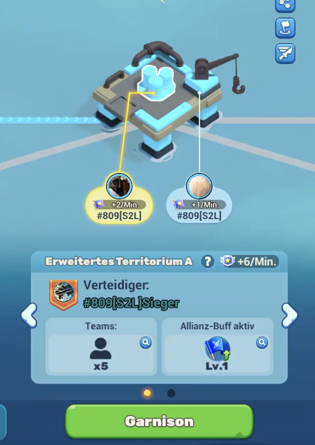
Nicht jedes Gebiet ist gleich gebaut.Not every territory is built the same.Tous les territoires ne sont pas construits pareil.Non tutti i territori sono fatti uguali.No todos los territorios están construidos igual.Nem todos os territórios são iguais.Her bölge aynı şekilde kurulmuş değil.Не каждая территория устроена одинаково.Ein Turm hat mehrere Plätze: ein Zentrum und dazu einen oder mehrere Kräne. Ein Versteck ist dagegen ein einzelner Ort. Es gibt also viele Gebiete auf der Karte — aber unterschiedlich viele Plätze darin.A tower has several slots: a centre plus one or more cranes. A hideout, by contrast, is a single place. So there are many territories on the map — but a different number of slots inside each.Une tour a plusieurs places : un centre plus une ou plusieurs grues. Une cache, en revanche, est un lieu unique. Il y a donc beaucoup de territoires sur la carte — mais un nombre de places différent dans chacun.Una torre ha diversi posti: un centro più una o più gru. Un nascondiglio invece è un luogo unico. Ci sono quindi molti territori sulla mappa — ma con un numero diverso di posti dentro.Una torre tiene varios puestos: un centro y una o más grúas. Un escondite, en cambio, es un solo lugar. Así que hay muchos territorios en el mapa — pero con distinto número de puestos dentro.Uma torre tem vários lugares: um centro mais uma ou mais gruas. Um esconderijo, pelo contrário, é um único sítio. Há portanto muitos territórios no mapa — mas com números diferentes de lugares dentro.Bir kulede birkaç yer vardır: bir merkez ve bir ya da daha çok vinç. Buna karşılık bir sığınak tek bir yerdir. Yani haritada çok sayıda bölge var — ama içlerindeki yer sayısı farklı.У вышки несколько мест: центр плюс один или несколько кранов. А укрытие — это одно-единственное место. То есть территорий на карте много, но мест внутри у них разное количество.
Zentrum: +2 Punkte pro Minute · Kran: +1 Punkt pro MinuteCentre: +2 points per minute · Crane: +1 point per minuteCentre : +2 points par minute · Grue : +1 point par minuteCentro: +2 punti al minuto · Gru: +1 punto al minutoCentro: +2 puntos por minuto · Grúa: +1 punto por minutoCentro: +2 pontos por minuto · Grua: +1 ponto por minutoMerkez: dakikada +2 puan · Vinç: dakikada +1 puanЦентр: +2 очка в минуту · Кран: +1 очко в минутуJeder Platz tickt für sich. Oben am Gebiet steht die Summe — im Bild +6/Min. für das ganze Territorium. Bis zu 5 Teams können sich hineinsetzen.Each slot ticks on its own. At the top of the territory you see the total — in the picture +6/min for the whole territory. Up to 5 teams can garrison there.Chaque place tourne pour elle-même. En haut du territoire s'affiche le total — sur l'image +6/min pour tout le territoire. Jusqu'à 5 équipes peuvent s'y installer.Ogni posto conta per sé. In alto sul territorio c'è il totale — nell'immagine +6/min per tutto il territorio. Fino a 5 squadre possono presidiarlo.Cada puesto suma por su cuenta. Arriba del territorio aparece el total — en la imagen +6/min para todo el territorio. Hasta 5 equipos pueden meterse dentro.Cada lugar conta por si. No topo do território vê-se o total — na imagem +6/min para todo o território. Até 5 equipas podem guarnecê-lo.Her yer kendi başına işler. Bölgenin üstünde toplam yazar — resimde tüm bölge için +6/dk. En fazla 5 takım içine yerleşebilir.Каждое место тикает само по себе. Наверху территории показан итог — на картинке +6/мин для всей территории. Занять её могут до 5 отрядов.
Deshalb zählt jeder einzelne Platz.That is why every single slot counts.C'est pourquoi chaque place compte.Per questo ogni singolo posto conta.Por eso cuenta cada puesto.Por isso cada lugar conta.Bu yüzden her bir yer önemli.Поэтому важно каждое место.Ein leerer Platz produziert nichts. Ein besetzter produziert rund um die Uhr — auch wenn du offline bist.An empty slot produces nothing. An occupied one produces around the clock — even while you are offline.Une place vide ne produit rien. Une place occupée produit 24 h/24 — même hors ligne.Un posto vuoto non produce nulla. Uno occupato produce 24 ore su 24 — anche se sei offline.Un puesto vacío no produce nada. Uno ocupado produce las 24 horas — aunque estés desconectado.Um lugar vazio não produz nada. Um ocupado produz 24 horas por dia — mesmo offline.Boş yer hiçbir şey üretmez. Dolu yer 24 saat üretir — sen çevrimdışıyken bile.Пустое место не даёт ничего. Занятое даёт круглые сутки — даже когда ты офлайн.
⚓ Anker — ohne Anker kein Sieg⚓ Anchors — no anchors, no win⚓ Ancres — sans ancres, pas de victoire⚓ Ancore — senza ancore niente vittoria⚓ Anclas — sin anclas no hay victoria⚓ Âncoras — sem âncoras não há vitória⚓ Çapalar — çapa yoksa zafer yok⚓ Якоря — без якорей нет победы
Jeder Angriff kostet 1 Anker.Every attack costs 1 anchor.Chaque attaque coûte 1 ancre.Ogni attacco costa 1 ancora.Cada ataque cuesta 1 ancla.Cada ataque custa 1 âncora.Her saldırı 1 çapaya mal olur.Каждая атака стоит 1 якорь.Du bekommst 8 pro Tag (10 mit Saisonpass), im Vorrat passen maximal 15 — alles darüber verfällt.You get 8 per day (10 with the season pass), the stock holds at most 15 — anything above is lost.Tu en reçois 8 par jour (10 avec le pass saison), la réserve contient au maximum 15 — tout le reste est perdu.Ne ricevi 8 al giorno (10 con il pass stagionale), la riserva ne tiene al massimo 15 — tutto il resto va perso.Recibes 8 al día (10 con el pase de temporada), la reserva guarda como mucho 15 — todo lo demás se pierde.Recebes 8 por dia (10 com o passe de época), a reserva guarda no máximo 15 — tudo acima disso perde-se.Günde 8 alırsın (sezon pass ile 10), stokta en fazla 15 durur — fazlası yanar.Ты получаешь 8 в день (10 с сезонным пассом), в запасе помещается максимум 15 — всё сверх сгорает.
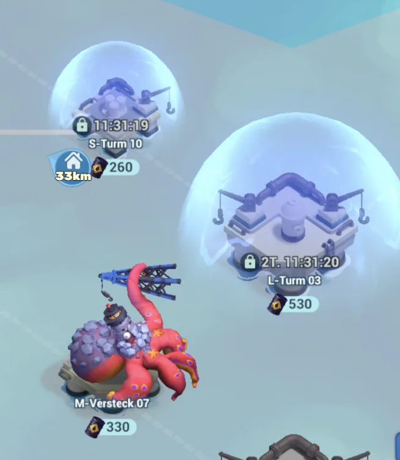
Am Anfang ist fast alles gesperrt.At the start almost everything is locked.Au début, presque tout est verrouillé.All'inizio è quasi tutto bloccato.Al principio casi todo está bloqueado.No início está quase tudo bloqueado.Başta neredeyse her şey kilitli.В начале почти всё заперто.Die Gebiete öffnen sich nacheinander, manche erst nach Tagen (im Bild: 11 Stunden, 2 Tage). Es gibt also kaum etwas zu kämpfen.Territories open one after another, some only after days (in the picture: 11 hours, 2 days). So there is barely anything to fight over.Les territoires s'ouvrent l'un après l'autre, certains seulement après des jours (image : 11 heures, 2 jours). Il n'y a donc presque rien à disputer.I territori si aprono uno dopo l'altro, alcuni solo dopo giorni (nell'immagine: 11 ore, 2 giorni). Quindi c'è pochissimo per cui combattere.Los territorios se abren uno tras otro, algunos solo tras días (en la imagen: 11 horas, 2 días). Así que casi no hay por qué pelear.Os territórios abrem um a seguir ao outro, alguns só ao fim de dias (na imagem: 11 horas, 2 dias). Por isso quase não há por que lutar.Bölgeler sırayla açılır, bazıları ancak günler sonra (resimde: 11 saat, 2 gün). Yani savaşacak neredeyse bir şey yok.Территории открываются одна за другой, некоторые только через дни (на картинке: 11 часов, 2 дня). Драться почти не за что.
Am Ende sind alle offen — und alle kämpfen gleichzeitig.At the end all of them are open — and everybody fights at once.À la fin, tous sont ouverts — et tout le monde se bat en même temps.Alla fine sono tutti aperti — e combattono tutti insieme.Al final están todos abiertos — y todos pelean a la vez.No fim estão todos abertos — e toda a gente luta ao mesmo tempo.Sonda hepsi açık — ve herkes aynı anda savaşır.В конце открыты все — и дерутся все сразу.Genau dann brauchen wir die Anker. Wer sie früh verballert, steht am wichtigsten Tag mit leeren Händen da.That is exactly when we need the anchors. Whoever burns them early stands empty-handed on the most important day.C'est précisément là qu'on a besoin des ancres. Qui les gaspille tôt se retrouve les mains vides le jour le plus important.È proprio allora che servono le ancore. Chi le brucia presto arriva a mani vuote nel giorno più importante.Justo entonces necesitamos las anclas. Quien las quema pronto llega con las manos vacías el día más importante.É precisamente aí que precisamos das âncoras. Quem as gasta cedo fica de mãos vazias no dia mais importante.Çapalara tam o zaman ihtiyacımız var. Erken harcayan, en önemli günde eli boş kalır.Именно тогда якоря и нужны. Кто сожжёт их рано, в самый важный день останется ни с чем.
Der Trick, damit nichts verfällt: vor 00:00 UTC auf 7 Anker herunterspielen.The trick so nothing is lost: go down to 7 anchors before 00:00 UTC.L'astuce pour ne rien perdre : descendre à 7 ancres avant 00:00 UTC.Il trucco per non perdere nulla: scendi a 7 ancore prima delle 00:00 UTC.El truco para no perder nada: baja a 7 anclas antes de las 00:00 UTC.O truque para não perder nada: desce até 7 âncoras antes das 00:00 UTC.Hiçbir şey kaybetmemenin püf noktası: 00:00 UTC'den önce 7 çapaya in.Приём, чтобы ничего не сгорело: перед 00:00 UTC спустись до 7 якорей.Mit Saisonpass auf 5. Der Nachschub füllt dann wieder auf 15 auf. So nutzt du jeden Tag alles und behältst trotzdem die volle Reserve.With the season pass, down to 5. The refill then tops you back up to 15. That way you use everything every day and still keep the full reserve.Avec le pass saison, à 5. La recharge te remonte ensuite à 15. Tu utilises tout chaque jour et gardes quand même la réserve pleine.Con il pass stagionale, a 5. La ricarica ti riporta poi a 15. Così usi tutto ogni giorno e mantieni comunque la riserva piena.Con el pase de temporada, a 5. La recarga te devuelve luego a 15. Así usas todo cada día y conservas la reserva llena.Com o passe de época, até 5. A recarga volta a encher para 15. Assim usas tudo todos os dias e manténs a reserva cheia.Sezon pass ile 5'e. Yenileme seni tekrar 15'e çıkarır. Böylece her gün hepsini kullanır, yine de tam yedeği korursun.С сезонным пассом — до 5. Пополнение снова доводит до 15. Так ты каждый день тратишь всё и при этом сохраняешь полный резерв.
⚖️ Die Abwägung — die Allianz UND deine Kiste⚖️ The trade-off — the alliance AND your chest⚖️ L'arbitrage — l'alliance ET ton coffre⚖️ Il bilanciamento — l'alleanza E il tuo forziere⚖️ El equilibrio — la alianza Y tu cofre⚖️ O equilíbrio — a aliança E o teu baú⚖️ Denge — ittifak VE senin sandığın⚖️ Баланс — альянс И твой сундук
Jeder Angriff zahlt auf zwei Konten gleichzeitig ein.Every attack pays into two accounts at once.Chaque attaque alimente deux compteurs à la fois.Ogni attacco versa su due conti insieme.Cada ataque suma en dos cuentas a la vez.Cada ataque conta para duas contas ao mesmo tempo.Her saldırı aynı anda iki hesaba yazılır.Каждая атака идёт сразу на два счёта.Die Allianzpunkte für das Gebiet — und deinen Soloverdienst für die eigene Tageskiste.The alliance points for the territory — and your solo merit for your own daily chest.Les points d'alliance pour le territoire — et ton mérite solo pour ton coffre du jour.I punti alleanza per il territorio — e il tuo merito solo per il forziere del giorno.Los puntos de alianza del territorio — y tu mérito en solitario para tu cofre del día.Os pontos de aliança do território — e o teu mérito a solo para o baú do dia.Bölge için ittifak puanları — ve kendi günlük sandığın için solo liyakatin.Очки альянса за территорию — и твоя личная заслуга для дневного сундука.
Deine Tageskiste bekommst du auch, wenn die Allianz verliert.You get your daily chest even if the alliance loses.Tu obtiens ton coffre du jour même si l'alliance perd.Il forziere del giorno lo prendi anche se l'alleanza perde.Tu cofre del día lo consigues aunque la alianza pierda.Recebes o teu baú do dia mesmo que a aliança perca.Günlük sandığını ittifak kaybetse bile alırsın.Дневной сундук ты получишь, даже если альянс проиграет.Die zählt nur deine eigenen Punkte. Also lass sie nie liegen.It only counts your own points. So never leave it on the table.Il ne compte que tes propres points. Ne le laisse jamais de côté.Conta solo i tuoi punti. Quindi non lasciarlo mai lì.Solo cuenta tus propios puntos. Así que no lo dejes nunca.Só conta os teus pontos. Por isso nunca o deixes para trás.Sadece kendi puanlarını sayar. O yüzden onu asla boşa bırakma.Он считает только твои очки. Так что никогда его не бросай.
Die Reihenfolge: erst die Allianz, dann die eigene Kiste.The order: alliance first, then your own chest.L'ordre : d'abord l'alliance, ensuite ton coffre.L'ordine: prima l'alleanza, poi il tuo forziere.El orden: primero la alianza, luego tu cofre.A ordem: primeiro a aliança, depois o teu baú.Sıralama: önce ittifak, sonra kendi sandığın.Порядок: сначала альянс, потом свой сундук.Wenn R4 ruft, geht die Allianz vor. Ist ein Gebiet schon sicher, nimm die restlichen Anker für deine eigene Kiste. Nie Anker ungenutzt in die Nacht mitnehmen.When R4 calls, the alliance comes first. If a territory is already safe, use the remaining anchors for your own chest. Never carry unused anchors into the night.Quand R4 appelle, l'alliance passe avant. Si un territoire est déjà acquis, mets les ancres restantes dans ton coffre. Ne garde jamais d'ancres inutilisées pour la nuit.Quando chiama R4, l'alleanza viene prima. Se un territorio è già sicuro, usa le ancore restanti per il tuo forziere. Non portarti mai ancore inutilizzate nella notte.Cuando llama R4, la alianza va primero. Si un territorio ya está asegurado, usa las anclas restantes para tu cofre. Nunca te lleves anclas sin usar a la noche.Quando o R4 chama, a aliança vem primeiro. Se um território já está seguro, usa as âncoras restantes no teu baú. Nunca leves âncoras por usar para a noite.R4 çağırınca ittifak önce gelir. Bir bölge zaten garantiyse, kalan çapaları kendi sandığın için kullan. Kullanılmamış çapayı asla geceye taşıma.Когда зовёт R4, альянс идёт первым. Если территория уже наша, оставшиеся якоря вложи в свой сундук. Никогда не уноси неиспользованные якоря в ночь.
🟢 Für Kleine und Neue — ihr seid keine Statisten🟢 For small and new players — you are not extras🟢 Pour les petits et les nouveaux — vous n'êtes pas des figurants🟢 Per piccoli e nuovi — non siete comparse🟢 Para pequeños y nuevos — no sois figurantes🟢 Para pequenos e novos — não são figurantes🟢 Küçükler ve yeniler için — figüran değilsiniz🟢 Для маленьких и новых — вы не массовка
1. Setz dich sofort in alles, was unbesetzt ist.1. Move into anything unoccupied right away.1. Installe-toi tout de suite sur tout ce qui est libre.1. Mettiti subito in tutto ciò che è libero.1. Métete enseguida en todo lo que esté libre.1. Mete-te já em tudo o que estiver livre.1. Boş olan her yere hemen otur.1. Сразу занимай всё, что свободно.Kein Kampf, keine Verluste — und ab der ersten Minute sammelst du Punkte für uns.No fight, no losses — and from the first minute you collect points for us.Pas de combat, pas de pertes — et dès la première minute tu récoltes des points pour nous.Nessun combattimento, nessuna perdita — e dal primo minuto raccogli punti per noi.Sin pelea, sin pérdidas — y desde el primer minuto recoges puntos para nosotros.Sem combate, sem perdas — e desde o primeiro minuto juntas pontos para nós.Savaş yok, kayıp yok — ve ilk dakikadan itibaren bizim için puan toplarsın.Ни боя, ни потерь — и с первой минуты ты собираешь очки для нас.
2. Um 00:00 UTC ist alles wieder frei.2. At 00:00 UTC everything is free again.2. À 00:00 UTC, tout est de nouveau libre.2. Alle 00:00 UTC è tutto di nuovo libero.2. A las 00:00 UTC todo vuelve a estar libre.2. Às 00:00 UTC fica tudo livre outra vez.2. 00:00 UTC'de her şey yeniden serbest.2. В 00:00 UTC всё снова свободно.Dann stehen viele Gebiete leer und die Gegner schlafen. Das ist die beste Zeit für kleine Accounts.Many territories then stand empty and the opponents are asleep. That is the best time for small accounts.Beaucoup de territoires sont alors vides et les adversaires dorment. C'est le meilleur moment pour les petits comptes.Molti territori restano vuoti e gli avversari dormono. È il momento migliore per gli account piccoli.Muchos territorios quedan vacíos y los rivales duermen. Es el mejor momento para cuentas pequeñas.Muitos territórios ficam vazios e os adversários dormem. É a melhor altura para contas pequenas.O zaman birçok bölge boş kalır ve rakipler uyur. Küçük hesaplar için en iyi zaman.Тогда многие территории пустуют, а противники спят. Это лучшее время для маленьких аккаунтов.
3. Dein Haupttrupp kann einen Posten holen.3. Your main squad can take a post.3. Ta troupe principale peut prendre un poste.3. La tua squadra principale può prendere un avamposto.3. Tu tropa principal puede tomar un puesto.3. A tua tropa principal pode tomar um posto.3. Ana birliğin bir mevki alabilir.3. Твой основной отряд может взять точку.Ein schwach umkämpfter Posten ist ein voller Posten — er zählt genauso wie einer, den ein Großer erobert. Auch mit einem Babyaccount lässt sich so ein Posten holen, das ist schon ausprobiert. Es muss nur ein schwacher Kampf sein.A lightly contested post is a full post — it counts exactly like one taken by a big player. Even a baby account can take such a post, that has already been tried. It just has to be a weak fight.Un poste peu disputé est un poste complet — il compte autant qu'un poste pris par un gros. Même un compte débutant peut prendre un tel poste, c'est déjà testé. Il faut juste que le combat soit faible.Un avamposto poco conteso è un avamposto pieno — conta esattamente come uno preso da un grande. Anche un account piccolissimo può prenderlo, è già stato provato. Basta che sia un combattimento debole.Un puesto poco disputado es un puesto completo — cuenta igual que uno tomado por un grande. Incluso una cuenta muy pequeña puede tomarlo, ya está probado. Solo tiene que ser una pelea débil.Um posto pouco disputado é um posto completo — conta tanto como um tomado por um grande. Até uma conta muito pequena o pode tomar, já foi testado. Só tem de ser um combate fraco.Az çekişilen bir mevki tam bir mevkidir — büyük birinin aldığıyla aynı sayılır. Böyle bir mevkiyi çok küçük bir hesap da alabilir, bu denendi. Sadece zayıf bir savaş olması yeterli.Слабо оспариваемая точка — это полноценная точка, она считается так же, как взятая сильным игроком. Такую точку может взять даже совсем маленький аккаунт, это уже проверено. Нужно только, чтобы бой был слабым.
4. Oder du machst einem Großen den Weg frei.4. Or you clear the way for a big player.4. Ou tu ouvres la voie à un gros.4. Oppure spiani la strada a un grande.4. O le abres el camino a un grande.4. Ou abres caminho a um grande.4. Ya da büyük birine yolu açarsın.4. Или ты расчищаешь дорогу сильному.Wenn du eine Stelle aufweichst, kommt ein Großer danach mit einem einzigen Anker hinein. Das spart der Allianz Anker — und genau die sind unser knappstes Gut.If you soften a spot, a big player then gets in with a single anchor. That saves the alliance anchors — and those are exactly our scarcest resource.Si tu affaiblis un endroit, un gros y entre ensuite avec une seule ancre. Ça économise des ancres à l'alliance — et ce sont justement notre bien le plus rare.Se indebolisci un punto, un grande entra poi con una sola ancora. Questo fa risparmiare ancore all'alleanza — e sono proprio il nostro bene più scarso.Si ablandas un sitio, un grande entra después con una sola ancla. Eso le ahorra anclas a la alianza — y son justo nuestro bien más escaso.Se enfraqueceres um ponto, um grande entra depois com uma única âncora. Isso poupa âncoras à aliança — e são precisamente o nosso bem mais escasso.Bir noktayı yumuşatırsan, büyük biri sonra tek bir çapayla girer. Bu ittifaka çapa kazandırır — ve en kıt kaynağımız tam olarak onlar.Если ты ослабишь место, сильный игрок потом зайдёт одним-единственным якорем. Это экономит альянсу якоря — а они и есть наш самый дефицитный ресурс.
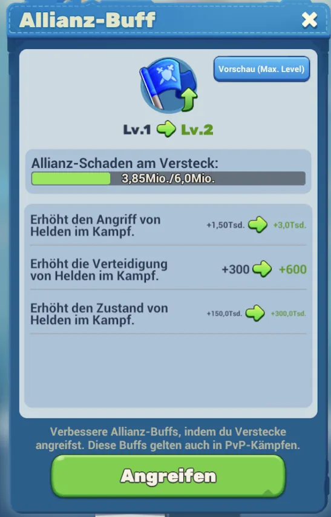
5. Und das Beste: Angriffe auf Verstecke stärken die ganze Allianz.5. And the best part: attacks on hideouts strengthen the whole alliance.5. Et le meilleur : attaquer les caches renforce toute l'alliance.5. E il bello: attaccare i nascondigli rafforza tutta l'alleanza.5. Y lo mejor: atacar escondites fortalece a toda la alianza.5. E o melhor: atacar esconderijos fortalece toda a aliança.5. Ve en güzeli: sığınaklara saldırmak tüm ittifakı güçlendirir.5. И самое лучшее: атаки на укрытия усиливают весь альянс.Jeder Schaden füllt den Allianz-Buff — mehr Heldenangriff, mehr Verteidigung, mehr Lebenspunkte für alle. Im Spiel steht es wörtlich: diese Buffs gelten auch in normalen PvP-Kämpfen.Every bit of damage fills the alliance buff — more hero attack, more defence, more health for everyone. The game says it literally: these buffs also apply in normal PvP fights.Chaque dégât remplit le buff d'alliance — plus d'attaque de héros, plus de défense, plus de points de vie pour tout le monde. Le jeu le dit littéralement : ces buffs s'appliquent aussi en PvP normal.Ogni danno riempie il buff dell'alleanza — più attacco eroi, più difesa, più salute per tutti. Il gioco lo dice testualmente: questi buff valgono anche nei normali PvP.Cada daño llena el buff de alianza — más ataque de héroes, más defensa, más vida para todos. El juego lo dice literalmente: estos buffs valen también en PvP normal.Cada dano enche o buff da aliança — mais ataque de heróis, mais defesa, mais vida para todos. O jogo di-lo literalmente: estes buffs valem também em PvP normal.Verilen her hasar ittifak buff'ını doldurur — herkes için daha çok kahraman saldırısı, savunması ve canı. Oyun bunu birebir yazıyor: bu buff'lar normal PvP savaşlarında da geçerli.Каждый нанесённый урон наполняет бафф альянса — больше атаки героев, больше защиты, больше здоровья для всех. В игре написано дословно: эти баффы действуют и в обычных PvP-боях.
Es gibt keinen wertlosen Angriff.There is no worthless attack.Aucune attaque n'est inutile.Non esiste un attacco inutile.No hay ataque inútil.Não há ataque inútil.Değersiz saldırı diye bir şey yok.Бесполезных атак не бывает.Auch wenn du ein Versteck nicht alleine knackst — dein Schaden zählt und macht die ganze Allianz stärker.Even if you cannot crack a hideout alone — your damage counts and makes the whole alliance stronger.Même si tu ne casses pas une cache tout seul — tes dégâts comptent et rendent toute l'alliance plus forte.Anche se non abbatti un nascondiglio da solo — il tuo danno conta e rende tutta l'alleanza più forte.Aunque no revientes un escondite tú solo — tu daño cuenta y hace más fuerte a toda la alianza.Mesmo que não consigas rebentar um esconderijo sozinho — o teu dano conta e torna toda a aliança mais forte.Bir sığınağı tek başına kıramasan bile — senin hasarın sayılır ve tüm ittifakı güçlendirir.Даже если ты не пробьёшь укрытие в одиночку — твой урон засчитывается и делает весь альянс сильнее.
🤝 Warum es nur zusammen geht🤝 Why it only works together🤝 Pourquoi ça ne marche qu'ensemble🤝 Perché funziona solo insieme🤝 Por qué solo funciona juntos🤝 Porque só funciona juntos🤝 Neden sadece birlikte olur🤝 Почему получается только вместе
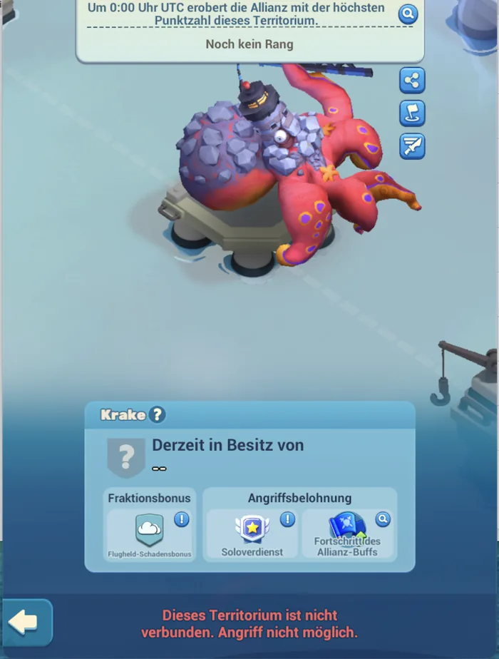
„Dieses Territorium ist nicht verbunden. Angriff nicht möglich.""This territory is not connected. Attack not possible."« Ce territoire n'est pas relié. Attaque impossible. »"Questo territorio non è collegato. Attacco non possibile.""Este territorio no está conectado. Ataque no posible.""Este território não está ligado. Ataque não possível.""Bu bölge bağlı değil. Saldırı mümkün değil."«Эта территория не связана. Атака невозможна.»Wir können nur angreifen, was an unser Gebiet anschließt. Darum rücken wir als Kette vor, nicht als Einzelne.We can only attack what adjoins our own territory. That is why we advance as a chain, not as individuals.On ne peut attaquer que ce qui touche notre territoire. C'est pourquoi on avance en chaîne, pas chacun de son côté.Possiamo attaccare solo ciò che confina con il nostro territorio. Per questo avanziamo a catena, non da soli.Solo podemos atacar lo que linda con nuestro territorio. Por eso avanzamos en cadena, no por separado.Só podemos atacar o que faz fronteira com o nosso território. Por isso avançamos em cadeia, não sozinhos.Sadece kendi bölgemize komşu olan yerlere saldırabiliriz. Bu yüzden zincir hâlinde ilerleriz, tek tek değil.Мы можем атаковать только то, что примыкает к нашей территории. Поэтому мы идём цепочкой, а не поодиночке.
In ein besetztes Gebiet kannst du dich nicht einfach hineinsetzen.You cannot simply move into an occupied territory.On ne peut pas simplement s'installer dans un territoire occupé.In un territorio occupato non puoi semplicemente entrare.En un territorio ocupado no puedes meterte sin más.Num território ocupado não te podes simplesmente meter.Dolu bir bölgeye öylece oturamazsın.В занятую территорию нельзя просто сесть.Dann heißt es „Dieses Territorium ist schon besetzt". Deshalb sind freie Plätze so wertvoll und deshalb muss ein Angriff gemeinsam laufen.It says "This territory is already occupied". That is why free slots are so valuable and why an attack has to run together.Il affiche « Ce territoire est déjà occupé ». C'est pourquoi les places libres valent si cher et pourquoi une attaque doit se faire ensemble.Dice "Questo territorio è già occupato". Per questo i posti liberi valgono tanto e per questo un attacco va fatto insieme.Dice "Este territorio ya está ocupado". Por eso los puestos libres valen tanto y por eso un ataque debe hacerse en conjunto.Diz "Este território já está ocupado". Por isso os lugares livres valem tanto e por isso um ataque tem de ser em conjunto."Bu bölge zaten dolu" yazar. Bu yüzden boş yerler çok değerli ve bu yüzden saldırı birlikte yapılmalı.Появится «Эта территория уже занята». Поэтому свободные места так ценны и поэтому атака должна идти сообща.
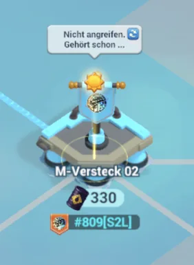
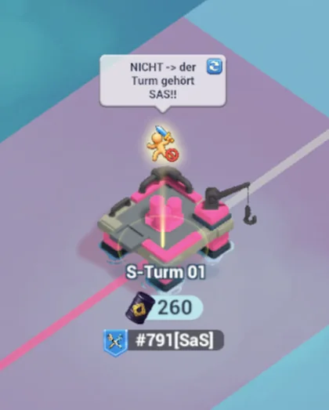
R4 markiert zwei Dinge direkt auf der Karte.R4 marks two things right on the map.R4 marque deux choses directement sur la carte.R4 segna due cose direttamente sulla mappa.R4 marca dos cosas directamente en el mapa.O R4 marca duas coisas directamente no mapa.R4 haritada doğrudan iki şeyi işaretler.R4 отмечает на карте две вещи.Erstens: „Nicht angreifen. Gehört schon …" — das haben wir bereits sicher, da muss kein Anker mehr hinein. Zweitens: „NICHT → der Turm gehört …" — dieses Gebiet gehört einer anderen Allianz. In beiden Fällen gilt dasselbe: markiert heißt Finger weg.First: "Do not attack. Already belongs to …" — that one is already safely ours, no more anchors needed there. Second: "DO NOT → the tower belongs to …" — that territory belongs to another alliance. In both cases the same applies: marked means hands off.Premièrement : « Ne pas attaquer. Appartient déjà à … » — celui-là est déjà à nous, plus besoin d'ancre. Deuxièmement : « NON → la tour appartient à … » — ce territoire est à une autre alliance. Dans les deux cas, même règle : marqué = on n'y touche pas.Primo: "Non attaccare. Appartiene già a …" — quello è già nostro in sicurezza, lì non serve più nessuna ancora. Secondo: "NON → la torre appartiene a …" — quel territorio è di un'altra alleanza. In entrambi i casi vale lo stesso: segnato vuol dire giù le mani.Primero: "No atacar. Ya pertenece a …" — ese ya es nuestro con seguridad, ahí no hace falta ninguna ancla más. Segundo: "NO → la torre pertenece a …" — ese territorio es de otra alianza. En ambos casos vale lo mismo: marcado significa no tocar.Primeiro: "Não atacar. Já pertence a …" — esse já é nosso em segurança, não é preciso mais nenhuma âncora ali. Segundo: "NÃO → a torre pertence a …" — esse território é de outra aliança. Nos dois casos vale o mesmo: marcado quer dizer não mexer.Birincisi: "Saldırmayın. Zaten şuna ait …" — orası zaten garanti bizim, oraya artık çapa gerekmez. İkincisi: "HAYIR → kule şuna ait …" — o bölge başka bir ittifakın. İkisinde de aynı kural geçerli: işaretli demek elini sürme demek.Первое: «Не атаковать. Уже принадлежит …» — это уже надёжно наше, туда якорь больше не нужен. Второе: «НЕ → вышка принадлежит …» — эта территория принадлежит другому альянсу. В обоих случаях правило одно: отмечено — значит не трогаем.
Absprachen sparen mehr Anker als Kämpfen.Deals save more anchors than fighting.Les accords économisent plus d'ancres que les combats.Gli accordi risparmiano più ancore del combattere.Los acuerdos ahorran más anclas que pelear.Os acordos poupam mais âncoras do que lutar.Anlaşmalar savaşmaktan daha çok çapa kazandırır.Договорённости экономят больше якорей, чем бои.Mit einer gegnerischen Allianz kann man sich die Gebiete aufteilen — dann sichern beide ihren Platz und keiner verbrennt Anker gegeneinander.With an opposing alliance you can split the territories — then both secure their place and nobody burns anchors against the other.Avec une alliance adverse, on peut se partager les territoires — chacun assure sa place et personne ne gaspille d'ancres contre l'autre.Con un'alleanza avversaria ci si può dividere i territori — così entrambe si assicurano il posto e nessuno brucia ancore contro l'altra.Con una alianza rival se pueden repartir los territorios — así ambas aseguran su sitio y nadie quema anclas contra la otra.Com uma aliança adversária pode dividir-se os territórios — assim ambas garantem o seu lugar e ninguém gasta âncoras contra a outra.Rakip bir ittifakla bölgeleri paylaşabilirsiniz — böylece ikisi de yerini garantiler ve kimse birbirine karşı çapa yakmaz.С соперничающим альянсом можно поделить территории — тогда обе стороны закрепляют своё место и никто не жжёт якоря друг против друга.
Im Zweifel kurz im Chat fragen — nicht angreifen.When in doubt ask quickly in chat — do not attack.En cas de doute, demande vite dans le chat — n'attaque pas.Nel dubbio chiedi al volo in chat — non attaccare.Ante la duda pregunta rápido en el chat — no ataques.Na dúvida pergunta rápido no chat — não ataques.Şüphedeysen sohbette hızlıca sor — saldırma.Сомневаешься — быстро спроси в чате, не атакуй.30 Sekunden fragen ist billiger als ein verlorener Anker.Asking for 30 seconds is cheaper than a lost anchor.30 secondes de question coûtent moins qu'une ancre perdue.Chiedere per 30 secondi costa meno di un'ancora persa.Preguntar 30 segundos sale más barato que un ancla perdida.Perguntar 30 segundos é mais barato que uma âncora perdida.30 saniye sormak, kaybedilen bir çapadan ucuzdur.30 секунд вопроса дешевле потерянного якоря.
🌙 Nachtschicht ab 00:00 UTC🌙 Night shift from 00:00 UTC🌙 Service de nuit dès 00:00 UTC🌙 Turno di notte dalle 00:00 UTC🌙 Turno de noche desde las 00:00 UTC🌙 Turno da noite a partir das 00:00 UTC🌙 00:00 UTC'den itibaren gece vardiyası🌙 Ночная смена с 00:00 UTC
Um 00:00 UTC wird alles frei.At 00:00 UTC everything becomes free.À 00:00 UTC, tout se libère.Alle 00:00 UTC si libera tutto.A las 00:00 UTC todo queda libre.Às 00:00 UTC fica tudo livre.00:00 UTC'de her şey serbest kalır.В 00:00 UTC всё освобождается.Wer sich dann in drei Gebiete setzt, sammelt die ganze Nacht — ohne einen einzigen Kampf. Wer in einer östlichen Zeitzone lebt oder ohnehin spät wach ist: das ist deine Schicht.Whoever sits down in three territories then collects all night — without a single fight. If you live in an eastern time zone or are up late anyway: this is your shift.Celui qui s'installe alors sur trois territoires récolte toute la nuit — sans un seul combat. Si tu vis dans un fuseau à l'est ou que tu veilles tard : c'est ton créneau.Chi allora si mette in tre territori raccoglie tutta la notte — senza un solo combattimento. Se vivi in un fuso orientale o stai comunque sveglio tardi: è il tuo turno.Quien entonces se mete en tres territorios recoge toda la noche — sin una sola pelea. Si vives en una zona horaria al este o trasnochas igualmente: este es tu turno.Quem então se mete em três territórios junta a noite toda — sem um único combate. Se vives num fuso a leste ou ficas acordado até tarde: este é o teu turno.O anda üç bölgeye oturan bütün gece toplar — tek bir savaş olmadan. Doğudaki bir saat diliminde yaşıyorsan ya da zaten geç saate kadar ayaktaysan: bu senin vardiyan.Кто тогда садится в три территории, собирает всю ночь — без единого боя. Если ты живёшь в восточном часовом поясе или всё равно не спишь допоздна: это твоя смена.
00:00 UTC
01:00 UK / IE / PT
02:00 DE / AT / FR / IT / ES / PL / NL
03:00 FI / GR / RO / UA / RU / TR
🔢 Für Genaue — die Zahlen🔢 For the precise ones — the numbers🔢 Pour les précis — les chiffres🔢 Per i precisi — i numeri🔢 Para los precisos — los números🔢 Para os rigorosos — os números🔢 Detaycılar için — sayılar🔢 Для точных — цифры
Schwellen, Formel, Öl-Erträge, Truhen — aufklappenThresholds, formula, oil yields, chests — expandSeuils, formule, rendements, coffres — déroulerSoglie, formula, rese di petrolio, forzieri — apriUmbrales, fórmula, rendimientos, cofres — desplegarLimiares, fórmula, rendimentos, baús — abrirEşikler, formül, petrol getirileri, sandıklar — açПороги, формула, добыча нефти, сундуки — развернуть
Die Formel: Punkte pro Minute × 720 = Tagesschwelle.The formula: points per minute × 720 = daily threshold.La formule : points par minute × 720 = seuil journalier.La formula: punti al minuto × 720 = soglia giornaliera.La fórmula: puntos por minuto × 720 = umbral diario.A fórmula: pontos por minuto × 720 = limiar diário.Formül: dakika başına puan × 720 = günlük eşik.Формула: очки в минуту × 720 = дневной порог.Denn die Hälfte eines Tages sind 720 Minuten. Damit rechnest du jedes Gebiet selbst aus: Plätze zählen, Zentrum als 2 und jeden Kran als 1, mal 720.Because half a day is 720 minutes. With it you work out any territory yourself: count the slots, the centre as 2 and each crane as 1, times 720.Car la moitié d'une journée fait 720 minutes. Tu calcules ainsi n'importe quel territoire : compte les places, le centre pour 2 et chaque grue pour 1, fois 720.Perché mezza giornata sono 720 minuti. Così calcoli da solo qualsiasi territorio: conta i posti, il centro come 2 e ogni gru come 1, per 720.Porque medio día son 720 minutos. Así calculas cualquier territorio: cuenta los puestos, el centro como 2 y cada grúa como 1, por 720.Porque meio dia são 720 minutos. Assim calculas qualquer território: conta os lugares, o centro como 2 e cada grua como 1, vezes 720.Çünkü yarım gün 720 dakikadır. Böylece her bölgeyi kendin hesaplarsın: yerleri say, merkezi 2, her vinci 1 al, 720 ile çarp.Потому что половина суток — это 720 минут. Так ты сам посчитаешь любую территорию: посчитай места, центр как 2, каждый кран как 1, умножь на 720.
| TurmTowerTourTorreTorreTorreKuleВышка | Punkte/MinPoints/minPoints/minPunti/minPuntos/minPontos/minPuan/dkОчков/мин | TagesschwelleDaily thresholdSeuil du jourSoglia giornalieraUmbral diarioLimiar diárioGünlük eşikДневной порог |
|---|---|---|
| S-TurmS towerTour STorre STorre STorre SS kuleВышка S | +3 | 2 160 |
| M- / L-TurmM / L towerTour M / LTorre M / LTorre M / LTorre M / LM / L kuleВышка M / L | +4 | 2 880 |
| L- / XL-TurmL / XL towerTour L / XLTorre L / XLTorre L / XLTorre L / XLL / XL kuleВышка L / XL | +6 | 4 320 |
Anker-BankAnchor bankBanque d'ancresBanca ancoreBanco de anclasBanco de âncorasÇapa bankasıБанк якорейVor 00:00 UTC auf 7 (mit Pass 5) → Nachschub +8 (+10) → wieder 15. Über den Tag genau 8 (10) ausgeben, dann passt es wieder.Down to 7 before 00:00 UTC (5 with pass) → refill +8 (+10) → back to 15. Spend exactly 8 (10) during the day and it fits again.Descendre à 7 avant 00:00 UTC (5 avec pass) → recharge +8 (+10) → de nouveau 15. Dépenser exactement 8 (10) dans la journée et le compte est bon.A 7 prima delle 00:00 UTC (5 con pass) → ricarica +8 (+10) → di nuovo 15. Spendi esattamente 8 (10) durante il giorno e torna a quadrare.A 7 antes de las 00:00 UTC (5 con pase) → recarga +8 (+10) → otra vez 15. Gasta exactamente 8 (10) durante el día y vuelve a cuadrar.A 7 antes das 00:00 UTC (5 com passe) → recarga +8 (+10) → outra vez 15. Gasta exactamente 8 (10) durante o dia e volta a bater certo.00:00 UTC'den önce 7'ye (pass ile 5) → yenileme +8 (+10) → tekrar 15. Gün içinde tam 8 (10) harca, yine tutar.До 7 перед 00:00 UTC (5 с пассом) → пополнение +8 (+10) → снова 15. За день потратить ровно 8 (10) — и всё сходится.
Öl-Erträge, am 21.08.2026 im Spiel gesehenOil yields seen in game on 21 Aug 2026Rendements en pétrole vus en jeu le 21.08.2026Rese di petrolio viste in gioco il 21.08.2026Rendimientos de petróleo vistos en el juego el 21.08.2026Rendimentos de petróleo vistos no jogo a 21.08.202621.08.2026'da oyunda görülen petrol getirileriДобыча нефти, увиденная в игре 21.08.2026XS-Versteck 90 · S-Turm 260–300 · M-Versteck 330 · L-Turm 530. Die Werte unterscheiden sich je Gebiet — die Zahl steht am Fass-Symbol direkt auf der Karte.XS hideout 90 · S tower 260–300 · M hideout 330 · L tower 530. The values differ per territory — the number is at the barrel icon right on the map.Cache XS 90 · tour S 260–300 · cache M 330 · tour L 530. Les valeurs varient selon le territoire — le chiffre est près de l'icône du baril sur la carte.Nascondiglio XS 90 · torre S 260–300 · nascondiglio M 330 · torre L 530. I valori cambiano per territorio — il numero è accanto all'icona del barile sulla mappa.Escondite XS 90 · torre S 260–300 · escondite M 330 · torre L 530. Los valores varían según el territorio — el número está junto al icono del barril en el mapa.Esconderijo XS 90 · torre S 260–300 · esconderijo M 330 · torre L 530. Os valores variam por território — o número está junto ao ícone do barril no mapa.XS sığınak 90 · S kule 260–300 · M sığınak 330 · L kule 530. Değerler bölgeye göre değişir — sayı haritada varil simgesinin yanındadır.Укрытие XS 90 · вышка S 260–300 · укрытие M 330 · вышка L 530. Значения отличаются по территориям — число стоит у значка бочки прямо на карте.
TruhenChestsCoffresForzieriCofresBaúsSandıklarСундукиAllianz bei 2,0 / 5,0 / 10,0 / 15,0 / 20,0 / 30,0 Tsd. Rohöl. Eigene bei 5,0 / 20,0 / 100,0 / 150,0 / 200,0 / 300,0 Tsd. Verdiensten.Alliance at 2.0 / 5.0 / 10.0 / 15.0 / 20.0 / 30.0k crude oil. Your own at 5.0 / 20.0 / 100.0 / 150.0 / 200.0 / 300.0k merits.Alliance à 2,0 / 5,0 / 10,0 / 15,0 / 20,0 / 30,0 k de pétrole. Perso à 5,0 / 20,0 / 100,0 / 150,0 / 200,0 / 300,0 k de mérites.Alleanza a 2,0 / 5,0 / 10,0 / 15,0 / 20,0 / 30,0 mila di greggio. Personali a 5,0 / 20,0 / 100,0 / 150,0 / 200,0 / 300,0 mila meriti.Alianza en 2,0 / 5,0 / 10,0 / 15,0 / 20,0 / 30,0 mil de crudo. Propios en 5,0 / 20,0 / 100,0 / 150,0 / 200,0 / 300,0 mil méritos.Aliança em 2,0 / 5,0 / 10,0 / 15,0 / 20,0 / 30,0 mil de petróleo. Próprios em 5,0 / 20,0 / 100,0 / 150,0 / 200,0 / 300,0 mil méritos.İttifak 2,0 / 5,0 / 10,0 / 15,0 / 20,0 / 30,0 bin ham petrolde. Kendininkiler 5,0 / 20,0 / 100,0 / 150,0 / 200,0 / 300,0 bin liyakatte.Альянс на 2,0 / 5,0 / 10,0 / 15,0 / 20,0 / 30,0 тыс. нефти. Личные на 5,0 / 20,0 / 100,0 / 150,0 / 200,0 / 300,0 тыс. заслуг.
Noch offen: Schwellen für XXL-Türme und für die Verstecke, und ob der Tageskampf wirklich schon 23:50 UTC endet (zweimal so gemessen). Wird nachgetragen, sobald es bestätigt ist — geraten wird nichts.Still open: thresholds for XXL towers and for the hideouts, and whether the daily fight really ends at 23:50 UTC (measured twice). Will be added once confirmed — nothing is guessed.Encore ouvert : les seuils des tours XXL et des caches, et si le combat quotidien se termine vraiment à 23:50 UTC (mesuré deux fois). Sera ajouté une fois confirmé — rien n'est deviné.Ancora aperto: le soglie per le torri XXL e per i nascondigli, e se la battaglia giornaliera finisca davvero alle 23:50 UTC (misurato due volte). Sarà aggiunto appena confermato — non si tira a indovinare.Aún abierto: los umbrales de las torres XXL y de los escondites, y si la lucha diaria acaba de verdad a las 23:50 UTC (medido dos veces). Se añadirá cuando esté confirmado — no se adivina nada.Ainda em aberto: os limiares das torres XXL e dos esconderijos, e se a luta diária acaba mesmo às 23:50 UTC (medido duas vezes). Será acrescentado quando estiver confirmado — não se adivinha nada.Hâlâ açık: XXL kuleler ve sığınaklar için eşikler, ve günlük savaşın gerçekten 23:50 UTC'de bitip bitmediği (iki kez ölçüldü). Doğrulanınca eklenecek — hiçbir şey tahmin edilmiyor.Пока открыто: пороги для вышек XXL и для укрытий, и действительно ли дневной бой заканчивается в 23:50 UTC (замерено дважды). Добавим, как только подтвердится — гадать не будем.
🖼️ Bilder aus dem Spiel🖼️ Pictures from the game🖼️ Images du jeu🖼️ Immagini dal gioco🖼️ Imágenes del juego🖼️ Imagens do jogo🖼️ Oyundan görüntüler🖼️ Скриншоты из игры
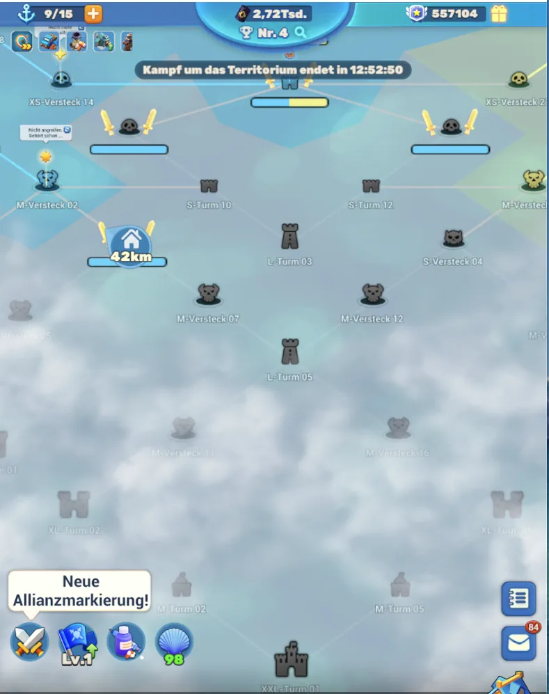
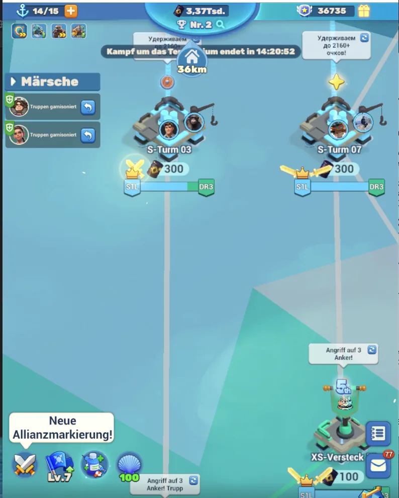
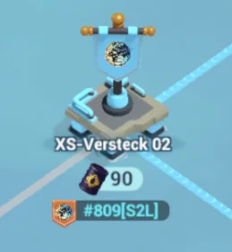
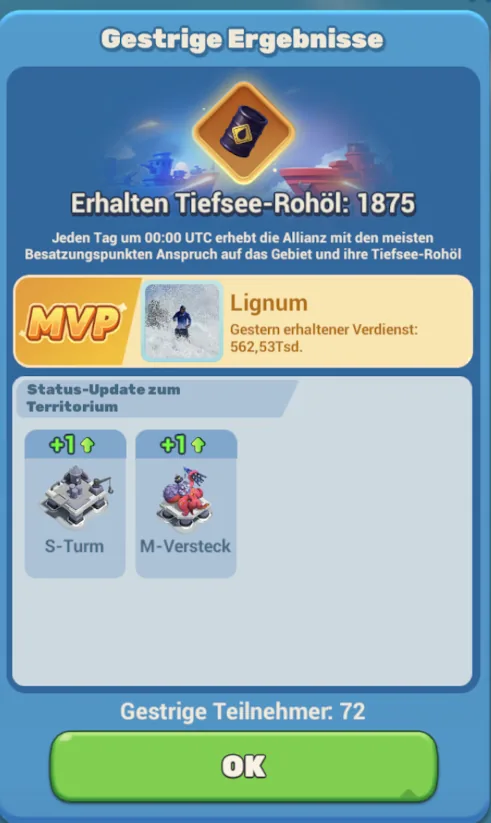
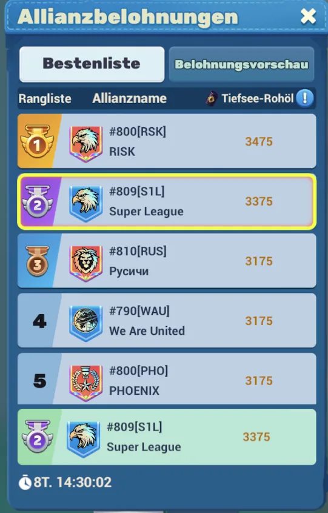
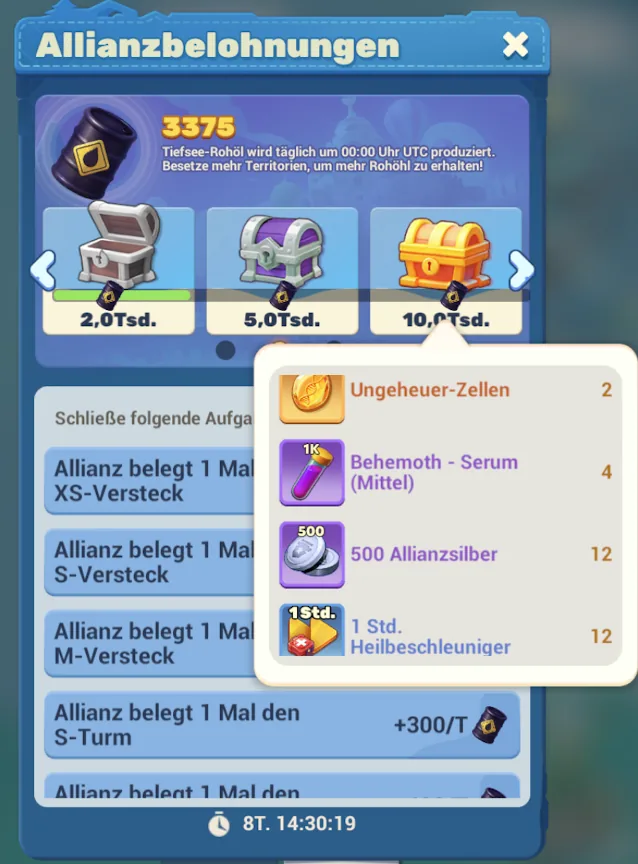
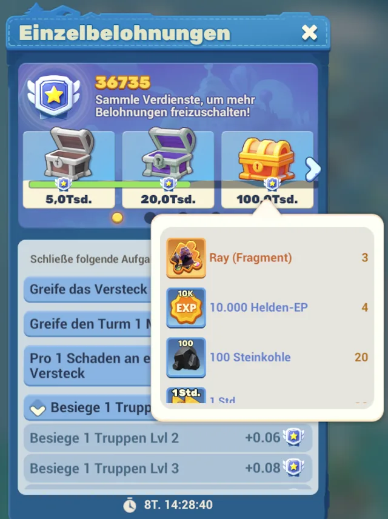